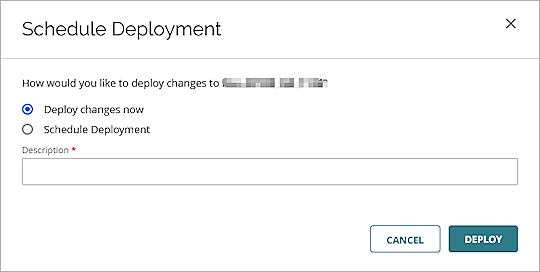

Deployment Overview
This guide demonstrates how to integrate Wi-Fi in WatchGuard Cloud with SecureW2 authentication for users to authenticate and receive certificates for WPA2 Enterprise EAP-TLS Wi-Fi access.
Integration Summary
The hardware and software used in this guide include:
- SecureW2:
- SecureW2 JoinNow MultiOS Management Portal
- WatchGuard:
- WatchGuard AP330
- WatchGuard Cloud Account
- WatchGuard Firebox
- Microsoft Server 2019
- Active Directory
Test Topology
SecureW2 JoinNow MultiOS Management Portal interacts with the WatchGuard AP330 access point through policies to end users.

SecureW2 Network Profile and RADIUS
Use the Device Onboarding section in the SecureW2 console to acquire the RADIUS information.
- Log in to the SecureW2 JoinNow MultiOS Management Portal and select Device Onboarding > Getting started.
- In the Quickstart Network Profile generator section, from the Profile Type drop-down list, select Wireless.
- In the SSID text box, type the SSID for the network that you want to secure with TLS.
- From the Security Type drop-down list, select WPA2-Enterprise.
- From the EAP Method drop-down list, select EAP-TLS.
- From the Policy drop-down list, select Default.
- From the Wireless Vendor drop-down list, select WatchGuard.
- From the RADIUS Vendor drop-down list, select SecureW2.
- Click Create.
The Network Profiles page appears. This process may take several minutes.

- Select AAA Management > AAA Configuration.
- Note the RADIUS Authentication Port, Primary IP Address, and the Shared Secret.
You will use this information in the WatchGuard Cloud configuration.

WatchGuard Cloud Configuration
For detailed information on Wi-Fi in WatchGuard Cloud deployment, see Get Started with Wi-Fi in WatchGuard Cloud.
Access points can have two different types of settings:
-
Device-level settings — Settings that you apply individually to each access point.
-
Access point site settings — Access point sites enable you to create SSID settings and apply them to multiple access points that subscribe to the site.
Configure SecureW2 RADIUS Information for EAP-TLS in WatchGuard Cloud
- Log in to your WatchGuard Cloud account. If you have a Service Provider account, you must select a subscriber account from the Account Manager.
- Select Configure > Authentication Domains.
- Click Add Authentication Domain.
- In the Domain Name text box, type a domain name.
- Click Next.
- In the Add servers section, select RADIUS.
- From the Type drop-down list, select Host IPv4.
- In the IP Address text box, type the Primary IP Address of the RADIUS server from SecureW2.
- In the Port text box, type the authentication port number for the RADIUS server from SecureW2.
- In the Shared secret text box, type the shared secret from the SecureW2 RADIUS server.
- In the Confirm shared secret text box, type the shared secret from the SecureW2 RADIUS server.
- Click Save to save the Authentication Domain settings.
- Click Done.
Configure the Authentication Domain and SSID Settings for an Access Point (Device Level Configuration)
To configure Authentication Domain and SSID settings for a single access point at the device level configuration:
- From WatchGuard Cloud, select Configure > Devices.
- Select your Access Point.
- Select Device Configuration.
- In the Authentication tile, click Domains.
- Click Add Authentication Domain.
- From the Select an existing Authentication Domain drop-down list, select the domain you created in the previous section.
- From the RADIUS Server drop-down list, select the RADIUS server.

- Click Save to save the Authentication Domain settings.
- Click Back to return to the configuration settings.
- Click SSIDs.
- Click Add SSID.
- In the SSID Name text box, type the SSID name.
- Select the Broadcast SSID check box.
- From the SSID Type drop-down list, select Private.
- From the Radio drop-down list, select 2.4 GHz and 5 GHz.
- From the Security drop-down list, select WPA2 Enterprise.
- From the Authentication Domain drop-down list, select the domain you created in the previous section.
- In the Network section, select Bridged.
- Click Save.
- Click Schedule Deployment.
- Select Deploy changes now.
- In the Description text box, type a description for the deployment.

- Click Deploy.
Configure the Authentication Domain and SSID Settings for an Access Point Site
To configure Authentication Domain and SSID settings and apply the configuration to multiple access points with an Access Point Site:
- From WatchGuard Cloud, select Configure > Access Point Sites.
- Click Add Site.
- In the Name text box, type a name for the site.
- Click Add.
- In the Authentication tile, click Domains.
- Click Add Authentication Domain.
- From the Select an existing Authentication Domain drop-down list, select the domain you created in the previous section.
- From the RADIUS Server drop-down list, select the RADIUS server.
- Click Save to save the Authentication Domain settings.
- Click Back to return the site configuration settings.
- Click SSIDs.
- Click Add SSID.
- In the SSID Name text box, type the SSID name.
- Select the Broadcast SSID check box.
- From the SSID Type drop-down list, select Private.
- From the Radio drop-down list, select 2.4 GHz and 5 GHz.
- From the Security drop-down list, select WPA2 Enterprise.
- From the Authentication Domain drop-down list, select the domain you created in the previous section.
- In the Network section, select Bridged.
- Click Save.
- Click Schedule Deployment.
- Select Deploy changes now.
- In the Description text box, type a description for the deployment.
- Click Deploy.
- Click Close.
- Click Back to return to the site configuration settings.
- Select the Subscribed Devices tab.
- Click Select Devices.
- Select the access points to subscribe to the site.
- Click Save.
Configure the WatchGuard Firebox for SecureW2 Access to Active Directory
SecureW2 connects to Active Directory at its public IP address 52.41.166.6 on port 389. You can also use port 636 for secure access.
- Log in to your WatchGuard Firebox.
- From Fireware Web UI, select Firewall > SNAT > Add.
- In the Name text box, type a name for the SNAT configuration.
- For Type, select Static NAT.
- In the SNAT Members section, click Add.
- From the IP Address or Interface drop-down list, select Any-External, External, or a public IP address.
- From the Choose Type drop-down list, select Internal IP Address.
- In the Host text box, type the private address of the Active Directory server.
- Click OK to add the member.
- Click Save.
- Select Firewall > Firewall Policies > Add Policy.
- Select Custom then Click Add.

- Type a Name and Description.
- Select Packet Filter.
- Add TCP port 389.
- Click Save. You are redirected to the Select a policy type page with your new custom policy selected in the drop-down list.
- Click Add Policy to continue with the policy creation.
- In the From field, remove Any-Trusted.
- Click Add.
- From the Member type drop-down list, select Host IPv4.
- Type the SecureW2 public IP address 52.41.166.6.
- Click OK.
- In the To field, remove Any-External.
- Click Add.
- From the Member type drop-down list, select Static NAT.
- Select the SNAT configuration you created in the previous section.
- Click OK.
- Click Save.
Create a Wi-Fi Authentication Group in Active Directory
A Security Group is created in the Active Directory to connect the user to the SecureW2 Authentication Policies, User Role Policies, and Enrollment Policies.
- From Windows Server 2019, open Server Manager.
- Select Tools > Active Directory Users and Computers.
- Expand the domain and right-click Users, then select New > Group.
- In the Group name text box, type the name of the security group associated with the users.
- In the Group name (pre-Windows 2000) text box, type the same name.
This text box might already be pre-defined with the correct name. - In the Group scope section, select Global.
- In the Group type section, select Security.
- Click OK.
- Double-click the name of the new security group.
- Select the Members tab.
- Click Add.
- Type the full name of each user.
- Select Check Names to verify, then click OK to submit.
- Click OK.
Configure SecureW2 for Active Directory Queries
- From the SecureW2 Management Portal, select Identity Management > Identity Providers.
- Click Add Identity Provider.
- Type a Name and Description.
- From the Type drop-down list, select LDAP.
- Click Save.

- In the Subject Name Attribute text box, type the subject name attribute.
- sAMAccountName — Use this attribute deploy a simple user name login.
- userPrincipalName — Use this attribute for the format username@example.com.

- Click Update.
- Edit the Identity Provider you created, then select the Connections tab.
- Click Add Connection.
- In the Name text box, type the name of the IDP connection.
- In the Hostname text box, type the public IP Address.
In this example, we use the public IP address of the WatchGuard Firebox. - In the Port text box, type 389. If the connection is secured with a certificate, select the TLS/SSL check box to change the port number to 636. Upload a server self-signed certificate for LDAP over SSL.
- Select Admin.
- In the Admin DN text box, type the administrator of the Active Directory server.
- In the Admin Password text box, type the password of the administrator account.
- To retrieve and select a Subject Base DN from the Active Directory, click Naming Contexts, then select or type the Subject Base DN.
- To retrieve and select a Group Base DN from the Active Directory, click Naming Contexts, then select or type the Group Base DN.
- In the Server timeout text box, type 30.

- Click Test Connection.

- Click OK.
- Click Update.
- Select the Attribute Mapping tab.
- Click Add.
- In the Local Attribute text box, type displayName.
- From the Remote Attribute drop-down list, select USER_DEFINED, then in the adjacent text box, type displayName.

- Click Next.
- Click Add.
- In the Local Attribute text box, type upn.
- From the Remote Attribute drop-down list, select USER_DEFINED, then in the adjacent text box, type userPrincipalName.
- Click Next.
- Click Add.
- In the Local Attribute text box, type email.
- From the Remote Attribute drop-down list, select USER_DEFINED, then in the adjacent text box, type mail.
- Click Next.
- Select the Groups tab.
- Click Add.
- In the Local Group text box, type the local group name.
- In the Remote Group text box, type the group attribute received from IDP.
This remote attribute is mapped to the local attribute. This value for Remote Group is case-sensitive.

- Click Next.
- Click Update.
Configure the SecureW2 Authentication Policy
The SecureW2 Authentication Policy defines the protocols that the JoinNow MultiOS uses to communicate with the devices and assign the Identity Provider.
- From the SecureW2 JoinNow MultiOS Management Portal, select Policy Management > Authentication.
- Click Edit on the auto-created Authentication Policy.
- Select the Settings tab.
- From the Identity Provider drop-down list, select the Identity Provider you created.
- Click Update.
Configure the SecureW2 User Role Policy
- From the SecureW2 JoinNow MultiOS Management Portal, select Policy Management > User Roles.
- Click Edit on the Default Role Policy 1.
- Select the Conditions tab.
- From the Identity Provider drop-down list, select the configured identity provider.

- Click Update.
Configure the SecureW2 Enrollment Policy
- From the SecureW2 JoinNow MultiOS Management Portal, select Policy Management > Enrollment.
- Select Edit on the Default Enrollment Policy 1.
- On the Conditions tab, from the User Role and Device Role drop-down list, select the default role and default device policies.

- Click Update.
Republish the SecureW2 Network Profile
- From the SecureW2 JoinNow MultiOS Management Portal, select Device Onboarding > Network Profiles.
- In the Functions column, click Re-publish.
- In the Name text box, type a name for the profile.

- Click OK.
This process may take several minutes. - In the Functions column, click View, and copy the URL. You will use the URL in the Test a Wireless Client section.
If you use a local identity provider, you can create the user directly on SecureW2 and you do not need to republish the network profile.
Test a Wireless Client
- Open a web browser, then go to the SecureW2 URL you retrieved in the Republish the SecureW2 Network Profile section.
- Click JoinNow.
- Run the downloaded application. Click Next.
- Type the Username and Password. Click Next.
The user is automatically redirected to the EAP-TLS wireless connection.